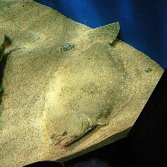

ようしょくひらめ（養殖平目）の生産量 都道府県ランキング
1位から3位までと、とれた量
ようしょくひらめが日本でいちばん多く育てられているのは大分県です。418 tで、全国（1,570 t）の27%を占めます。

| 順位 | 都道府県 | 収獲量 | 全国に占める割合 |
|---|---|---|---|
| 1位 | 大分県 | 418 t | 27% |
| 2位 | 愛媛県 | 267 t | 17% |
| 3位 | 鹿児島県 | 176 t | 11% |
この数字について
- 分類：鰈の仲間
- 全国の収獲量：1,570 t
- この数字が表すもの：収獲量（養殖で育てて取り上げた重さ）
- 調査：海面漁業生産統計調査（海面養殖業） 令和6年
- この品目は養殖の統計です。
- 7県分を調査（調査していない県は順位に入りません）
ようしょくひらめの生産量について、よくある質問
- ようしょくひらめの生産量が日本一の都道府県はどこですか？
- 大分県です。海面漁業生産統計調査（海面養殖業）（令和6年）で418 tでした。
- ようしょくひらめの生産量ランキング2位・3位はどこですか？
- 2位は愛媛県（267 t）、3位は鹿児島県（176 t）です。
- ようしょくひらめの全国の生産量はどれくらいですか？
- 1,570 t（令和6年）です。